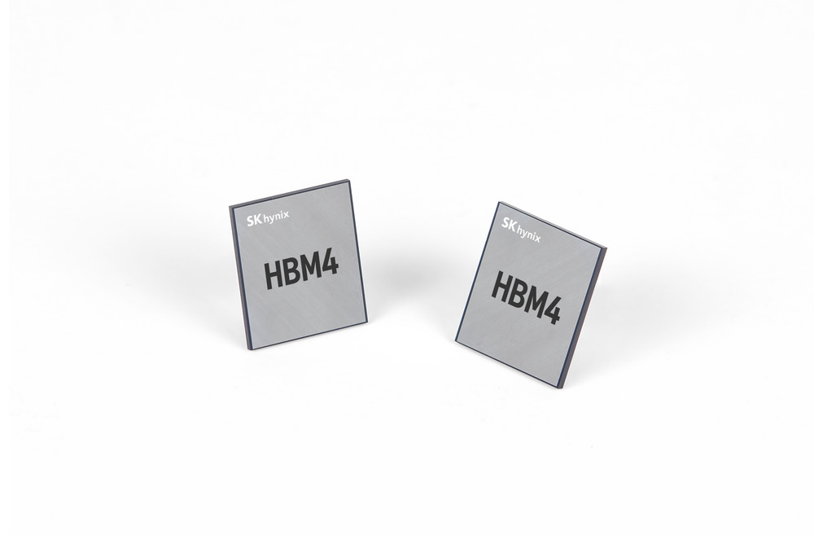
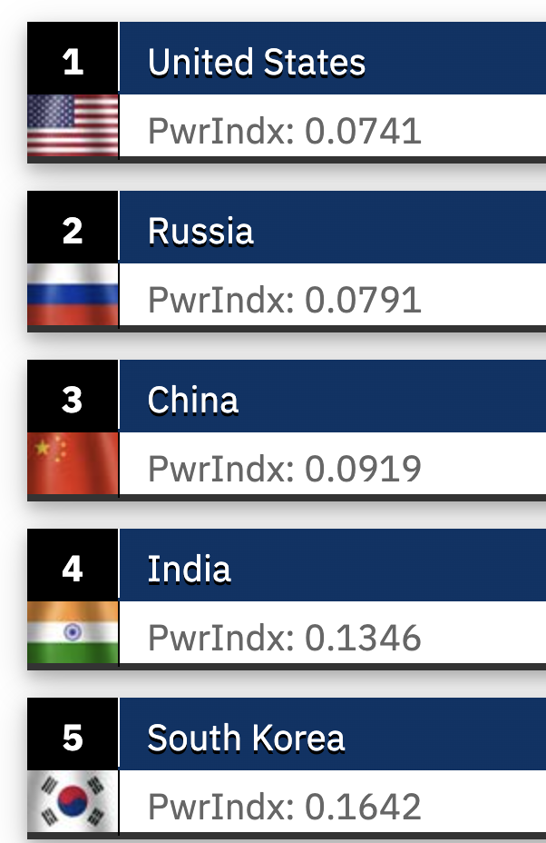
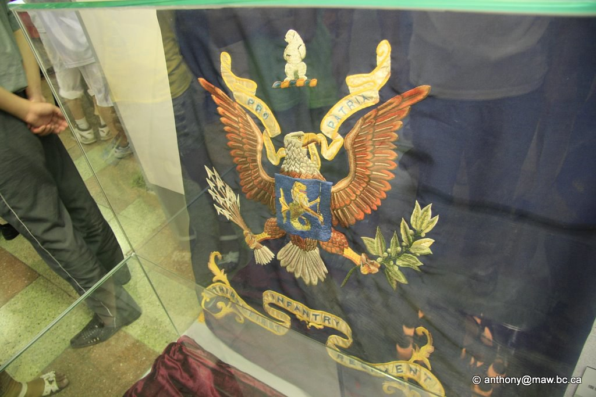

South Korea shapes what comes next.

$120.94 billion in goods exports · September 2026
The current export figure and talk argument
AI hardware, automated factories, ships, and defense systems connect Korea to the world's next decisions. Wisconsin is already part of those connections.
South Korea’s purchasing power.
Video source and comparison notes
The requested public reel is by Jean K. Min. Its Korean caption describes South Korea’s per-capita purchasing power overtaking France. The animated graph is the creator’s presentation; its data source and measurement definitions were not supplied in the visible post caption.
Original shared reel · Canonical Facebook reel. Checked October 6, 2026. The browser player reported a runtime of 37.87 seconds; the post’s upload date was not visible.
This uses Facebook’s player-only iframe generated by the reel’s More options → Embed menu. Playback starts on selection. The original link remains available if Facebook limits embedded playback. The video has not been downloaded or reposted.
Samsung. SK hynix. AI.



High-bandwidth memory supplies data to AI processors.
Industry figures, dates and sources
- $120.94 billion
- South Korea's goods exports in September 2026, the latest month available for this talk. September trade release.
- 1,220 robots
- Per 10,000 manufacturing employees in 2024: the world's highest industrial robot density, according to the International Federation of Robotics' 2025 report. IFR's comparison.
- AI memory
- High-bandwidth memory (HBM) supplies data to AI processors. Samsung announced commercial HBM4 shipments in February 2026; SK hynix reported mass shipments in its second-quarter results. Samsung announcement · SK hynix results.
Image sources
Samsung’s product photograph accompanies its February 12, 2026 announcement. SK hynix’s product photograph accompanies its September 12, 2025 announcement; its January 2026 results describe mass production. The pictured chips are product visuals, not Wisconsin facilities.
Shipbuilding: the commitment and the plan
A November 2025 U.S.–Korea agreement included a $150 billion Korean commitment to U.S. shipbuilding. Hanwha had announced a $5 billion infrastructure investment plan for its Philadelphia shipyard in August 2025.
These are commitments and plans. They are not measures of completed investment or ships already delivered. U.S.–Korea joint fact sheet · Hanwha's announcement.
Industry, defense, and the older rankings
The preparation connected memory chips, high-value shipbuilding, arms exports, and cosmetics. Each shows a different form of South Korean influence. The point is broader than a single GDP rank.
Its earlier labels included “#10 economy,” “#1 high-value shipbuilding,” and “#9 arms exporter,” along with a projected $37 billion for four defense firms in 2026. A rank needs a date, definition, and source. A revenue forecast is not an export total. The original figures remain in the archived preparation; they are not treated here as verified current measures.

A remarkable economic reversal
The preparation's comparison of North and South Korea's early postwar economies introduces the South's transformation from aid recipient to advanced industrial economy. Its precise “until 1974” crossover and Japan comparison require consistent historical estimates and a specified GDP measure.
History remains present.

Security, society and Wisconsin connections
- Security: unresolved war, alliances, and deterrence.
- Industry: advanced production and international supply chains.
- Society: local relationships, culture, and lived experience.
History remains active in East Asian politics. Symbols of past conflicts are displayed, taught, and used in present arguments. This is why industrial news and historical memory belong in the same account.
This reaches Wisconsin.
Wisconsin exported $698.6 million in goods to South Korea in 2024, its ninth-largest export destination. Wisconsin Economic Development Corporation's trade report.
Yuhan-Kimberly's joint venture with Kimberly-Clark began in 1970. It gives this global story a familiar Wisconsin connection. Yuhan-Kimberly's history.
Oshkosh Defense and Hanwha also collaborated on an Army infantry fighting vehicle concept in 2021. The Army selected other teams for the next phases in 2023. The partnership is one example of Korea's connections to Wisconsin manufacturing. Oshkosh's 2021 announcement · Army's 2023 awards.